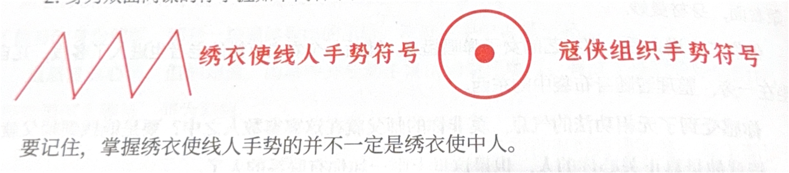

刁五兒
已慣江湖作浪游，愛恨情仇總難休。
情景一
你的故事
「在鶴須軍眾人的眼中，你是個古怪陰沉的男人，一個不善言談的怪物。若是沒有要緊事，所有人都會避開你走，看你的眼神也充滿了恐懼。你一邊享受這種被他人懼怕的感覺，一邊又因為自己的變化不時陷入瘋狂。
只有在沒有他人打擾的時候，你才敢展現出你的另一面。摘下臉上的黑布，脫下外面緊繃的夜行衣，再去除一圈一圈纏在身體上的束胸。沒錯，你是個貨真價實的女人，你是冷鈺，原鶴須軍大統領冷佛林的獨生女兒。
和別的女孩子一樣，你從小就是家中的嬌嬌女，而你的爹爹冷佛林乃是鶴須軍的大統領。
當然，那時候的你還不知道什麼是鶴須軍，只知道爹爹是一方豪傑，統領著一支隊伍。你的娘親死得早，爹爹為了補償你，給了你最無憂無慮的生活，還特地請了著名的武師，來傳授你武功。
「爹爹，你看我武功又精進啦！」每次你笑著撲向爹爹，都會被他高高地抱起，這是你最溫暖也最珍貴的回憶。
在你七歲時，鶴須軍跟當時的朝廷發生了一場衝突，不幸戰敗，你的爹爹被敵將丁崧俘獲。
彼時你只不過是一個小小的女童，聽聞爹爹被抓便立刻要去尋他，但你小小的身軀當然拗不過鶴須軍中的兵丁。沒有了爹爹的陪伴，你終日以淚洗面。軍中冷佛林即將被斬的傳聞愈演愈烈，只有你還盼望著奇蹟的到來。
讓你沒想到的是，爹爹居然完好無損地回來了。不但如此，爹爹還告訴你，說抓他的那個丁崧也是個大英雄，他們二人一見如故，已經成了知交好友，爹爹這次便是被他放回來的。
原來爹爹的敵人中也有好人啊？小小年紀的你，第一次有了這樣的想法。不過爹爹說那個丁崧如今也遇到了麻煩，因為放走了爹爹，丁崧被人告發，恐怕會面臨牢獄之災。
「鈺兒，若有機會，你一定要好好感謝這個伯伯。」爹爹如此告訴你。你心想，這個叫丁崧的伯伯對爹爹這麼好，若是有機會，你一定要幫著爹爹報此大恩。
數月後，牢獄中的丁崧將軍託人給爹爹帶話，說他如今身陷囹圄，恐怕逃不過一死，所以希望爹爹能夠照顧他的兒子丁典，將他培養成才。爹爹親自將丁典接了回來。丁典比你大六歲，已經是個大孩子了。不僅如此，他的武功也是極好的，一手丁家絕學「縛陽掌」使得厲害極了。
雖然他比你大了許多，不過剛剛來到鶴須軍，他的神情還是侷促得緊。「可能他的心裡也想念著他的爹爹吧。」你這樣想著，拉住了他的手，報以最甜美的微笑。丁典就這樣看著你的笑容，神情逐漸緩和，片刻之後嚎啕大哭。
爹爹在這數年裡不斷派人下山打探丁崧的下落，但毫無消息。漸漸地，就連丁典和爹爹都不抱希望了，覺得丁崧將軍肯定是不在人世了。於是爹爹將丁大哥收為義子，且為了避免朝廷迫害，爹爹還將自己的姓給了他。從此，丁大哥便改名叫做冷降塵，你也真的將冷降塵當做自己的親哥哥看待。現下不僅有爹爹疼愛，冷降塵哥哥對你也是極好的。
冷降塵進入鶴須軍後成長突飛猛進，在他和爹爹二人的努力之下，鶴須軍聲勢逐漸壯大。
冷降塵在軍中威信日盛，竟隱隱有蓋過爹爹的勢頭。
在你9歲時，權臣鄭木謀朝篡位，斷絕了大夏朝的江山，自己做起了皇帝，改國號為「起」，並且建立了自己的特務機構——繡衣使。爹爹告訴你，自從起朝建立後，天下局勢更加動蕩，民不聊生。像鶴須軍這樣的民間起義軍越來越多，逐漸遍布天下，大家一起反抗朝廷，殺貪官污吏，給百姓掙一條活路，久而久之，你們這些起義軍都被百姓們尊稱為「寇俠」。
你曾經聽到爹爹嘆息：「改了朝，換了代，掌權的依然是鄭木，百姓的生活並沒有好起來。」
你知道，謀一個太平盛世，是爹爹一輩子的心願。
然而爹爹終究還是沒有看到那一天。
龍瑞二年，爹爹祕密聯繫了天下各路寇俠首領，籌劃來年的攻起大事。這次爹爹做了萬全的準備，和義兄冷降塵兩個人一同上路，由車夫駕著一輛馬車悄然出行。
這一年你已經17歲了，心中早已理解了爹爹口中的大義。爹爹臨行前你依依不捨，沒想到這卻是和他的永別。
當爹爹滿身烏黑的屍體被義兄冷降塵運回來後，你徹底失控了。冷降塵告訴鶴須軍的兄弟，有人伏擊了他們。對方有十數人之多，他拼盡全力，雖然將對方殺得大敗，但是爹爹還是身負重傷，並且右肋也被匕首刺傷，就此殞命。
但你根本不信，十幾人圍攻，爹爹喪命，冷降塵卻毫髮無傷地回來了，這根本說不過去。
你懷疑是冷降塵害死了爹爹，意圖謀取鶴須軍大統領之位。什麼十多個人圍攻，全部都是他的藉口。
可是你沒有證據，鶴須軍裡也沒人把你的話當真，雖然你是冷佛林的女兒，但你也只是個17歲的少女罷了。接下來的兩年中，你將自己在鶴須軍中的生活比作「與虎謀皮」——你眼看著冷降塵掌控了鶴須軍，眼看著鶴須軍在冷降塵的統領下一天天壯大，更眼看著冷降塵於龍瑞四年率大軍開拔，和天下寇俠聯軍一起奔赴宛平府。
你的機會來了，趁著營中無人，你偷偷離開了鶴須軍的駐地，找到了繡衣使中的密探。
為了復仇你放棄了爹爹堅持的大義，敵人的敵人就是朋友，你抱著這樣的心態，成為了繡衣使的民間線人。
繡衣使對你十分重視，甚至派出了一名高手親自傳授你功法。你和此人相處半年，他每天都戴著面具，所以你並不知道他樣貌如何，更不知道他究竟是誰。但你並不關心這些，你唯一的目標就是練就能勝過冷降塵的武功，替爹爹報此大仇。
你的武功進步神速，但副作用也逐漸凸顯，你的皮膚開始紅腫，並且有了脫落的症狀。
見此情況，那人告訴你，他傳授給你的武功叫「無相功法」，很是刁鑽，雖然提高甚快，但反噬也很猛烈，你現在的症狀就是武功反噬的表現。那人勸你不要求之過急，因為修煉得越快反噬就越快。當然，這些話你是聽不進去的，你的心中只有復仇，其他事情你並不在乎。
那人見你不聽勸，也無可奈何，倒是更加用心教你，希望你少受一點反噬之苦，還製作了一種藥，幫你細細敷在皮膚上。
相處了大半年，你從最開始的冷淡，逐漸過渡到對此人的依賴。你能感受到，對方雖然表面上冷冰冰的，對你不假辭色，但實際上卻非常關心你。你心中對他很是感激，畢竟他是除了父親之外真正教會你東西的人。
半年過去，分別期已到，你的心中有些不捨，相處時間雖然短暫，可是你已經將這個人當成了自己的師父。他給你留下了一本《無相功法》的手抄本，而後匆匆離去。在這個不苟言笑的面具人身邊，你似乎感覺到了缺失的父愛。
這段時間你全身上下的皮膚，都因功力的不斷精進而逐漸潰爛，最終臉上也留下了大團可怖的疤痕，毒瘡布滿皮膚，隱隱散發著臭味，你每時每刻都覺得身體裡有東西在爬、在咬，但你也確實在短時間內練就了一身神功。經過數次繡衣使任務，你對自己目前的武功頗有信心。然而任務完成得越多，你的心也跟著越硬，往昔天真的少女心性似乎已經消散，取而代之的是對冷降塵刻骨的仇恨。
當然，作為女子，你不免在意自己的相貌，為了遮擋住自己醜陋的皮膚和面頰，你只能給自己套上一層層裹胸，脖頸上纏著厚厚的繃帶，以黑布蒙面。你的聲音嘶啞無比，沒人知道你叫什麼名字，是男還是女……殺人？只不過是為了給爹爹報仇的修行罷了，你對自己這麼說。
準備就緒，是時候「回歸」鶴須軍了。你以男人「刁五兒」的身份重返鶴須軍，等待著擊殺你的義兄，也就是現任大統領冷降塵的機會。
近日經歷
你的形象徹底大變，從不露出脖子，聲音更是嘶啞得如同男人一樣，從沒人懷疑過你的性別。鶴須軍中果然沒人認出你，包括冷降塵。此時的鶴須軍雖然經歷了宛平府大敗，但是在新進將領金四刀的帶領下，聲勢反而比以往更加壯大。這個金四刀甚至拿到了鶴須軍將領才擁有的身份銘牌，那是一塊通體碧綠的玉牌，冷降塵手中也有一塊。
雖然復仇心切，但你知道，山寨中並非動手復仇的最佳地點。有過豐富暗殺經驗的你，已經知道何為等待，何為忍耐。
麒安二年，冷降塵收到了一封信，據說是同為寇俠組織的玄甲軍統領所寫，信中邀請他前往盤興口議事。鶴須和玄甲的恩怨你只知道大概，因此你並不在意。
冷降塵決定親自前往玄甲軍所在地——盤興口赴約，因為此次為喬裝出行，所以身邊只帶了你和金四刀二人。
你知道機會來了。如今你憑藉自己獨絕的武功，已成為冷降塵最信任的近侍，所以他才會帶你出行，但是你仍然沒有把握能夠單獨擊殺冷降塵。你知道繡衣使在各支寇俠行伍中埋下了暗樁，若是此次能找到繡衣使埋下的暗樁，並且得到他們的幫助，你才有必勝的把握。
對金四刀這個人，你總是充滿戒心。經過復仇洗禮的你，能夠從對方的目光中讀出真實的想法。你感覺金四刀的眼神中充滿了野心，並不像甘於在鶴須軍中當個普通將領的人。不過這些又和你有什麼關係呢？只要他別成為你復仇路上的絆腳石就好。
今日經歷
七月十一，中元節前夕你們終於在約定日子裡趕到了盤興口。此時你們三人都做了客商打扮，冷降塵化名為張猛。
盤興口的天福客棧是你們的目的地，你並沒有忘記自己身為繡衣使聯絡人的使命，你要告訴鎮子上的繡衣使，寇俠已經到了。趁著他二人不注意，你在盤興口街市的布告欄上留下了四個字「雀至，福聚」，並畫上了聯絡繡衣使的獨特印記。不過布告欄上那一則讓民眾避暑的安民告示倒令你啞然發笑，落款居然是「人口丁」，誰會起這麼古怪的名字。
天福客棧並沒有幾個人，老闆娘著一身紅衣，正在指使小二忙東忙西，客棧大堂的角落裡有對江湖賣藝打扮的父女正在閒聊，那女子溫婉端莊，中年男子卻看著極是粗鄙，一身肥肉，眼睛盯著老闆娘不放。
你們三人隨意坐下，正待詢問老闆娘時，從客棧正門口走進來一對夫妻。男的看著是個白面書生，三十餘歲，看起來病懨懨的，長得倒還不錯，身形莫名有些熟悉，女子則用赤紗蒙著面，身材曼妙。
他們二人進入後，那賣藝的女子彈唱起來。隨後一個農夫打扮的老者也進入了客棧，兀自坐在一旁，整理著隨身布袋中的東西。
你感受到了無相功法的氣息，莫非你的師父就在這寥寥數人之中？要是能找到師父就好了，畢竟他是真正關心你的人，也是這世上唯一和你有聯繫的人了。
無論如何，今日必是冷降塵的死期，若有人擋路，都殺了便是……你看著眼前的眾人，心中陰狠地想到。
整個遊戲環節你需要注意的
對外身份介紹內容（個人介紹使用的身份）
你是一個客商，和其他兩個客商一起四處收貨，今日來到盤興口就是為了採買這裡的珍貴藥材鶴紅草的。因為每年的中元節前夕，都是鶴紅草大量出產的日子。
登場身份說明內容（遊戲過程中逐漸曝光的表面身份）
你是寇俠——鶴須軍大統領冷降塵的近侍刁五兒。同大統領冷降塵以及高級將領金四刀一起來到盤興口，密會寇俠玄甲軍的統領。
真實身份內容（需要盡量全程隱瞞的真實身份）
其實你是個女子，是鶴須軍前任大統領冷佛林的獨女。冷降塵是你的義兄，但你篤定冷佛林爲冷降塵所殺，一心報仇，投靠了繡衣使，成爲了繡衣使的民間線人。在盤興口你最關鍵任務便是除掉冷降塵爲父報仇。除此之外，你還需重新奪回鶴須軍的控制權，只有掌握軍權才能重拾一切。
注意
- 你是繡衣使的民間線人，同時也是寇俠鶴須軍的小頭目，所以你現在實際上是一個「雙重間諜」。在遊戲過程中請利用好你「雙面間諜」的身份，爭取獲得更多的信息，以便在後續遊戲中獲取有利地位。
- 身爲雙面間諜的你掌握如下兩種手勢符號： 要記住，掌握繡衣使線人手勢的並不一定是繡衣使中人。 手勢符號可以畫到便箋上使用，也可以在對方掌心處直接作畫使用。在遊戲過程中，你可以挑選正確的手勢符號加以使用，以獲取更多信息。 手勢符號可以在遊戲全程加以使用（如果你膽大心細，在公聊階段拿來和其他人進行暗地裏的溝通也可以。）

本階段你能獲得的道具如下：
- 60 兩銀兩卡：銀兩可以進行玩家間的私下交易，也可以同 NPC 進行交易。
- 【武功卡】×1：一次發動可造成 3 點傷害。
- 【天賦卡・敲詐】×1：你的樣子總是能幫助你靴到不少「好處」。在任意階段使用，能夠敲詐任意玩家一半的銀兩。（PS：敲詐時需 DM 在場；使用後回收）
- 【物品卡・鶴須軍近衛兵符】×1：價值 50 兩，可在競買武器時賣給武器店老闆。只有正確的人才能讓它發揮出最大威力。
你的任務
- 不要主動暴露自己的真實身份和目的。
- 儘可能找到你父親死亡的真相。
- 你已經給繡衣使中人留下了線人的標記，儘量找到他們。
- 找到你的師父，也許他有緩解你功法反噬的法子。
本環節你需要回答的問題
- 問題1： 這次冷降塵率領寇俠部衆來到盤興口的目的是什麼？
- 問題2： 客棧中都有誰是繡衣使？至少說出兩人。
- 問題3： 玄甲軍邀請你們前來的真實目的是什麼？
每個問題只能作答一次，答對一題你能獲得10兩銀子，但你無法得知你回答的哪個答案是正確的。
情景二 — 尚未解鎖
等待主持人宣布進入情景二，並向主持人取得解鎖碼。
解鎖碼不正確，請向主持人確認
情景二
兇案環節
◎ 你住在樓上
◎ 化名爲張猛的冷降塵住進了天字四號房
對你來說，這是除掉冷降塵的絕佳時機，畢竟客棧中除了金四刀和冷降塵之外，其他人對你鶴須軍的身份一無所知，更何況如今客棧中還有繡衣使中人。但你並不知道究竟誰才是真正的繡衣使，看來擊殺冷降塵還得靠自己。 成時（20:20左右），就在你打算出門之時，你聽到房間外有人走動，並敲了敲你的房門。 你在房間中輕喝了一聲「誰？」 門外之人沒有答話，好像被你嚇到了，只聽一陣輕微響動，來人似乎已經離開。你駐足聆聽片刻，似乎有人在客棧大堂中跳躍走動，你猛然打開房門，此時客棧大堂漆黑一片，你依稀看到一個人影從二樓左側樓梯下到了一樓，但你未看清究竟是誰。客棧中並不平靜，你也只能繼續在房間等待機會。 戌時（20:30左右），房間的門再次被人敲響，你打開門，發現竟是冷降塵。你心中大驚，難道自己的陰謀已經被此人知曉？冷降塵和你說有事詳談，邀你前去他的房間。 來到天字四號房，還未等你發問，冷降塵便直接說道：「冷鈺妹子，你要裝到幾時？」這句話讓你心中大震，想都不想一招無相殘堂便攻了過去。冷降塵硬生生接下了你這掌，他抓住了你的手，咳了幾聲，鮮血從他口中噴出，艱在你身上。冷降塵伸手擦去嘴邊的鮮血，繼續說道：「冷鈺妹子，難道你變成這樣爲兄便看不出來嗎？我知道你一直將我視作殺父仇人，可義父真的不是被我所殺。」 你冷哼了一聲：「既然你已經知道我是誰，那便不用多說了，今天不是你死就是我亡。」 說罷你又幾招攻了過去，哪想到冷降塵並沒有躲閃，硬生生地接了下來。
「冷鈺妹子，我承認沒有護住義父是爲兄的過錯，你今日打我，我也並無怨言，但你可知道為何我到現在才將這件事講與你聽？」 「這裡不是鶴須軍大寨，你當然是想藉此機會斬草除根！」你恨恨地說道。 冷降塵大笑一聲，從懷中掏出一物，遞到你面前，「冷鈺妹子，這是我鶴須軍的近衛軍兵符，今日爲兄就將鶴須軍的半數軍權交還於你。」你伸手接過兵符，心中極是震驚，不敢相信冷降塵居然真的會爲了你放棄鶴須軍的軍權。 冷降塵接着說道：「其實今日爲兄對你全盤託出，是因爲我發現了當日殺死義父之人就住在客棧的地字……罷了，還是待我將證據收集得更加充分再告訴你吧。」成時（20:50左右），冷降塵將你送出了房間，你拿着鶴須軍的近衛軍兵符回到了自己的房間，這一夜你都無法入睡，直至第二天清晨聽到了小二餘哥兒大呼小叫，你才推開房門來到了客棧的大堂之上。
本階段你的任務
小劇場環節
閱讀你角色的臺詞（標粗文字）
小二餘哥：賈掌櫃還有各位客官，小人今天清晨起來看到這庫房的房門虛掩，來到近前我才發現，原來是昨天入住的那名客人張猛死在了這裡。這可把小的嚇壞了，忙不迭的就將大夥叫來。賈掌櫃，咱們要不要報官啊？
賈三娘：先不忙著報官。我看各位應該也是這麼想的。餘兒，你就先把你看到的跟大夥說說。
小二餘哥：好的。現在這庫房中的味道都散了，但是我剛剛打開門時，這屋中卻還留著淡淡的香氣。許是剛發現死人，給我嚇得腦袋都暈乎乎的。我沒多想，就連忙叫來了大夥。
金四刀：冷……大哥，你死得好慘！（大喊）
農叟：死了的是冷降塵？這……這……（哭腔）
王順：冷降塵死了？老丈你說的可是那位豪氣萬丈的寇俠鶴須軍大統領？
農叟：沒錯，我說的就是他！（哭腔）
王順：兄弟雖是行走江湖的，不過對這位大統領也心嚮往之。難道金兄和冷降塵有關係？
金四刀：沒有沒有，我們只是行商的。這次到盤興口也是為了和別人談生意，同行罷了。
嚴逸：小哥，你剛剛說這庫房中本來是有香氣的？
小二餘哥：是啊，不過香氣並不濃郁，應該是我們客棧平素堆在庫房中的香物之氣吧。
嚴氏：相公，這傷口……（看向嚴逸）
嚴逸：嗯，應該是中毒了，毒發身亡。
刁五兒：這位兄臺看起來是個書生，怎地對毒物也如此了解？（看向嚴逸）
嚴氏：我相公久病在身，當然會對藥毒等物了解一二。
嚴逸：娘子（對著嚴氏說）……（又轉頭向著刁五兒說）這位兄弟不好意思，拙荊唐突了。在下不過是久病成醫罷了。
王思涵：這位大哥，怎地你們行商的也會有仇人？
金四刀：哼（冷笑），誰知道這裡是不是黑店？（看著賈三娘）
賈三娘：大爺，你這可就是說笑了。雖然這客棧剛開數月，但小女子在盤興口經營成衣坊多年，這鎮上的百姓哪個不知我賈三娘？我看還是各位之中誰同這位死了的大爺有私仇吧？
王順：賈老闆賈老闆，莫動氣。我看這位兄弟也是著急亂說話。
小二餘哥：各位大爺，你們先別吵，先聽小人的。我們這庫房，平素房門都是上鎖的，一般不會有人打開。
賈三娘：這庫房的鑰匙我手中有一把，餘哥兒手中也會有一把備用的。如今我的鑰匙好端端的在我手中，不知道那把備用鑰匙還在不在。
小二餘哥：我的鑰匙一向放在櫃上，我去看看……（離開，做一個轉身的動作）
刁五兒：你最好莫要亂說話，小心你的腦袋。（對著王思涵發怒）
王思涵：你嚇唬誰呢？你們這行商的說話可是和土匪差不多啊。（對著刁五兒發怒）
金四刀：二位，莫要吵了……
小二餘哥：沒了，鑰匙沒了，肯定有人偷了。（慌張的聲音，做假裝過來的動作）
金四刀：定然是有人偷了庫房鑰匙，在這裡謀害了冷大哥。究竟是誰？
小二餘哥：既然大夥暫時都不打算報官，這位大爺又死在我們店中，要不大夥還是先去看看案發現場吧。
本階段你的任務
參與線索討論，儘可能投出真兇。
引蛇出洞私聊環節
本階段你的任務
- 儘可能地找到信任的夥伴。
- 本環節爲私聊模式，所以不要暴露你自身的重要線索，並探聽更多消息。
- 找到《無相功法》全卷，提升你的武功。
本環節你需要回答的問題
- 問題1： 殺害你父親冷佛林的真兇是誰？
- 問題2： 你的同僚金四刀給人的感覺高深莫測，你知道他的真正身份和目的都是什麼嗎？
- 問題3： 你的武功是誰教的？請說出對方的真名。
- 問題4： 爲何你的武功反噬效果這麼厲害？
每個問題只能作答一次，答對一題你能獲得10兩銀子，但你無法得知你回答的哪個答案是正確的。
情景三 — 尚未解鎖
等待主持人宣布進入情景三，並向主持人取得解鎖碼。
解鎖碼不正確，請向主持人確認
情景三
暗通款曲私聊環節
你需要在本環節確定自身最終的陣營歸屬。
首先，在本環節開始初期，DM 會提醒你完成「陣營選擇」機制。在這個過程中可以從 DM 處領取你的專屬【絕學卡一卸器】1張，這是在下一個陣營搏殺環節中你所擁有的強力技能，千萬不要讓敵對陣營掌握該技能的信息。你必須在本環節完成「陣營選擇」，確定你的最終任務。
你的角色刁五兒，真實身份為雙重間諜，以及寇俠鶴須軍前任大統領之女冷鈺。所以在遊戲中你可以盡情利用你的雙面間諜身份，選擇一個對你最有利的陣營加入——只有活下來對你來說才是最終的勝利。
你的角色可以選擇任一陣營。
你在本環節的主要任務
- 單獨找到DM，完成「陣營選擇」。選擇「陣營」可以在本環節結束之前的任何時間完成，只要環節沒有結束，都可以隨時進行「陣營」調整。
- 根據你選擇的道路進行相關任務（「陣營」牌正面任務）。
陣營搏殺環節
鶴須軍大統領冷降塵就這樣在天福客棧中被人謀害，一時間人人自危。所有人都意識到，此時客棧中已然隱隱分爲了兩大陣營，分別是寇俠和來自於當今朝廷的繡衣使。這兩個陣營之間向來勢成水火，如今看來這場明爭暗鬥，必然要以一個陣營的勝出作爲終結，失敗陣營的所有人員也只有一個下場—死！但是現在沒有任何一個人能夠百分之百確定其他人的身份以及陣營歸屬。你們看着彼此，各自猜忌，互不信任。然而想要最終生還，你就必須去信任，信任那個值得你爲之付出的陣營，並堅持到底。
你在本環節的主要任務
詳細聽取 DM 有關陣營對戰的規則說明，然後全力幫助你的陣營在最終的混戰中取得勝利吧！